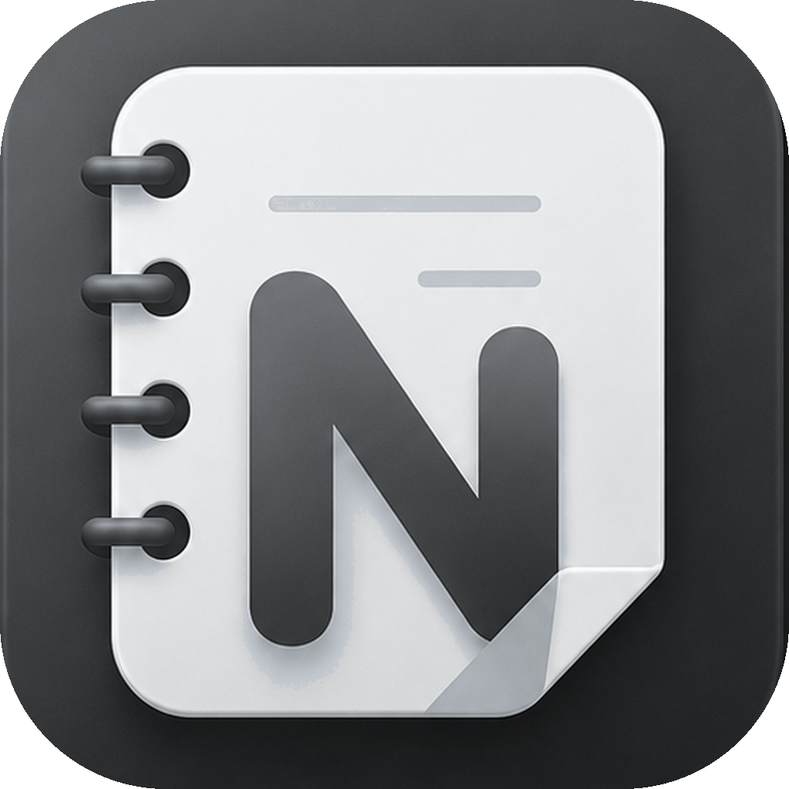

← Neumím · přejeď kartou · Umím →
Demo

Tato akce odstraní tvoje poznámky, štítky, Secret nastavení, přílohy a další LubaNote data z cloudu. Potom vyčistí i lokální data v tomto zařízení.
⚠️ Tuto akci nejde vrátit.
Přihlašovací účet a e-mail zůstanou zachované. Pokud si chceš
data ponechat, nejdřív zvol „Stáhnout moje data“.
LubaNote odstraní z tohoto zařízení lokální poznámky, cache, Secret nastavení, šifrovací klíče a přihlášení.
⚠️ Poznámky 📱 „Pouze v zařízení“ nejsou v Supabase.
Vyčištěním je nenávratně smažeš. Pokud je chceš zachovat, zvol
Zrušit, přihlas se původním účtem a v „Záloha a obnova“ vytvoř
Kompletní zálohu.
Cloudová data zůstanou beze změny.
Nenalezeny žádné poznámky.
Přidej první PDF, Word dokument nebo knihu EPUB.
Tento úkol se opakuje. Celá karta se přesune do Koše a všechna budoucí opakování se zruší.
Poznámka se přesune do Koše a můžeš ji později obnovit.
Správa LubaNote – účty, server, UI a diagnostika.
Produkční backend tohoto zařízení řídí Control Point.
Načítám stav bezpečného Migration Bridge…
Načítám veřejný Control Point…
TEST LubaServeru není součást běžné migrace. Použij ho jen při diagnostice nebo servisním testu konkrétního zařízení.
Použij tento návod pokaždé, i když migraci děláš až po dlouhé době. Produkční data se nepřepínají ručně.
Verze DEV
Poznámky, úkoly, plánování a připomínky na jednom místě.
Opravdu chceš tento štítek smazat?
Zadej hlavní heslo.
Poznámky se po 30 dnech automaticky smažou trvale.
Koš je prázdný.
Tato poznámka bude smazána trvale a nepůjde obnovit.